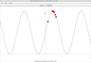
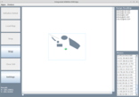

Note: To start an application, click on the appropriate link (on the left hand side). Requires Java Web Start
to be supported by your browser. In addition, to run these applications currently, you will need to add http://aimacode.github.io to the "Exception Site List", under the "Security" tab,
within your Java Control Panel (found here on Windows or here on Mac OS X).
 AIMA-GUI and AIMA-GUI and |
|
|---|---|
|  | AIMA and OSM Unified JavaFX Demo Application - A starter for running JavaFX based applications and command line demos from the AIMA-GUI and AIMAX-OSM projects. |
|  | AIMA and OSM Unified JavaFX Demo Application - A starter for running Swing based applications and command line demos from the AIMA-GUI and AIMAX-OSM projects. |